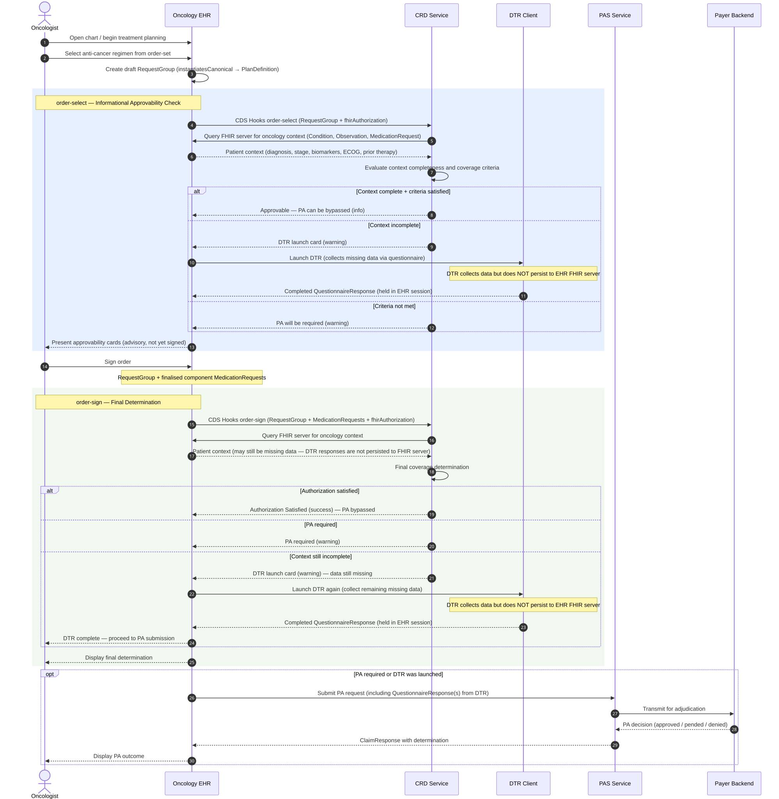

MOPA — Medical Oncology Prior Authorization
0.1.1-snapshot-080926 - snapshot-080926

MOPA — Medical Oncology Prior Authorization
0.1.1-snapshot-080926 - snapshot-080926

MOPA — Medical Oncology Prior Authorization - Local Development build (v0.1.1-snapshot-080926) built by the FHIR (HL7® FHIR® Standard) Build Tools. See the Directory of published versions
| Page standards status: Informative |
| Actor | Description |
|---|---|
| Oncology CRD Client | An EHR or ordering system that invokes CDS Hooks order-select or order-sign during anti-cancer regimen ordering |
| Oncology CRD Service | A payer coverage decision service that evaluates the ordered regimen by querying the EHR's FHIR API for required patient context, returning cards or an Authorization Satisfied result |
| DTR Client | A system that collects missing patient context using questionnaires when the CRD service could not retrieve sufficient data from the EHR FHIR server |
| PAS Client | A system that submits a structured prior authorization request when PA is required after CRD/DTR |
| PAS Server | A payer system that receives and adjudicates the PA request |
| Guideline Authority | An organization (e.g., NCCN, ASCO, internal pathways program) that publishes canonical regimen definitions as computable PlanDefinition artifacts |
The MOPA workflow uses the standard Da Vinci CRD/DTR/PAS sequence with two CDS Hooks stages:
order-select (informational) — fires when the provider selects a regimen from the
order-set, before signing. The CRD service evaluates approvability and returns informational
cards. This is advisory — the order has not been committed.order-sign (final determination) — fires when the provider signs the order. The CRD
service returns the final binding coverage determination.Clinician opens patient chart and begins treatment planning
Clinician selects anti-cancer regimen → EHR creates draft RequestGroup (RequestGroup.instantiatesCanonical → PlanDefinition regimen definition)
order-select (informational):
RequestGroup in context.selections and context.draftOrdersfhirAuthorization included when EHR FHIR access is availableProvider reviews approvability cards and decides whether to proceed
order-sign (final determination):
RequestGroup plus finalised component MedicationRequest resourcesIF context sufficient + criteria satisfied → Authorization Satisfied (PA bypassed) IF context incomplete in EHR → return DTR launch card IF context complete but criteria not met → return PA required card

For the full workflow to operate:
AntiCancerRegimenPlanDefinition) SHOULD be available
for the ordered regimenfhirAuthorization in the CDS Hooks request so the CRD service can
query patient context directlyThis IG extends Da Vinci CRD/DTR/PAS. It does not replace any Da Vinci workflow. Systems implementing this IG SHALL also conform to the relevant Da Vinci IGs for the workflows they support.
IG © 2026+ HL7 International / Clinical Interoperability Council.
Package hl7.fhir.us.codex-mopa#0.1.1-snapshot-080926 based on FHIR 4.0.1.
Generated
2026-09-08
Links: Table of Contents |
QA Report
| Version History |
 |
Propose a change
|
Propose a change